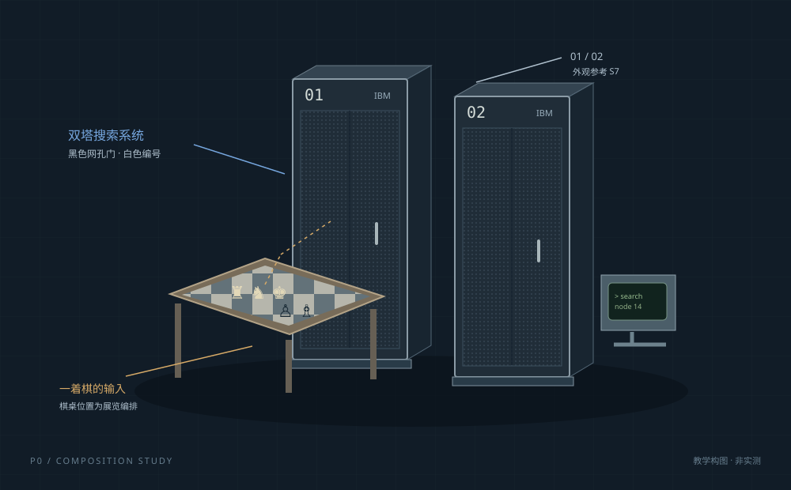

WIREFRAME / P0.1

1997HUMAN KNOWLEDGESEARCH · HARDWARE
01 / 集群全貌 · 展览式空间组合棋盘 → 搜索主节点
02 / STORYBOARD
从机柜，走进一颗芯片。
六个镜头连成三层观察。
先确认动作关系，再制作精细模型。
03 / REFERENCE BOARD
每一个细节，都有来处。
史料确认、教学示意、待核项分别标明。
照片在线引用，原创线框保存在本项目。
逐项史实与建模决定
原始来源索引
04 / REVIEW GATE
先确认方向，再进入建模。
本页可记录你的判断并导出。
审阅意见保存在本机浏览器。
五个需要你审阅的决定
等待审阅意见仅在本机保存；导出 JSON 后可用于下一轮修改。
审阅数据暂未加载成功，请刷新页面重试。